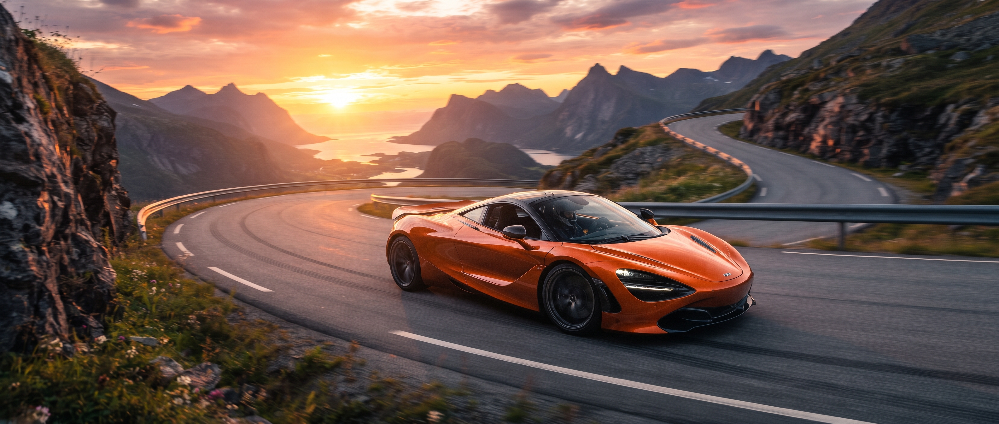
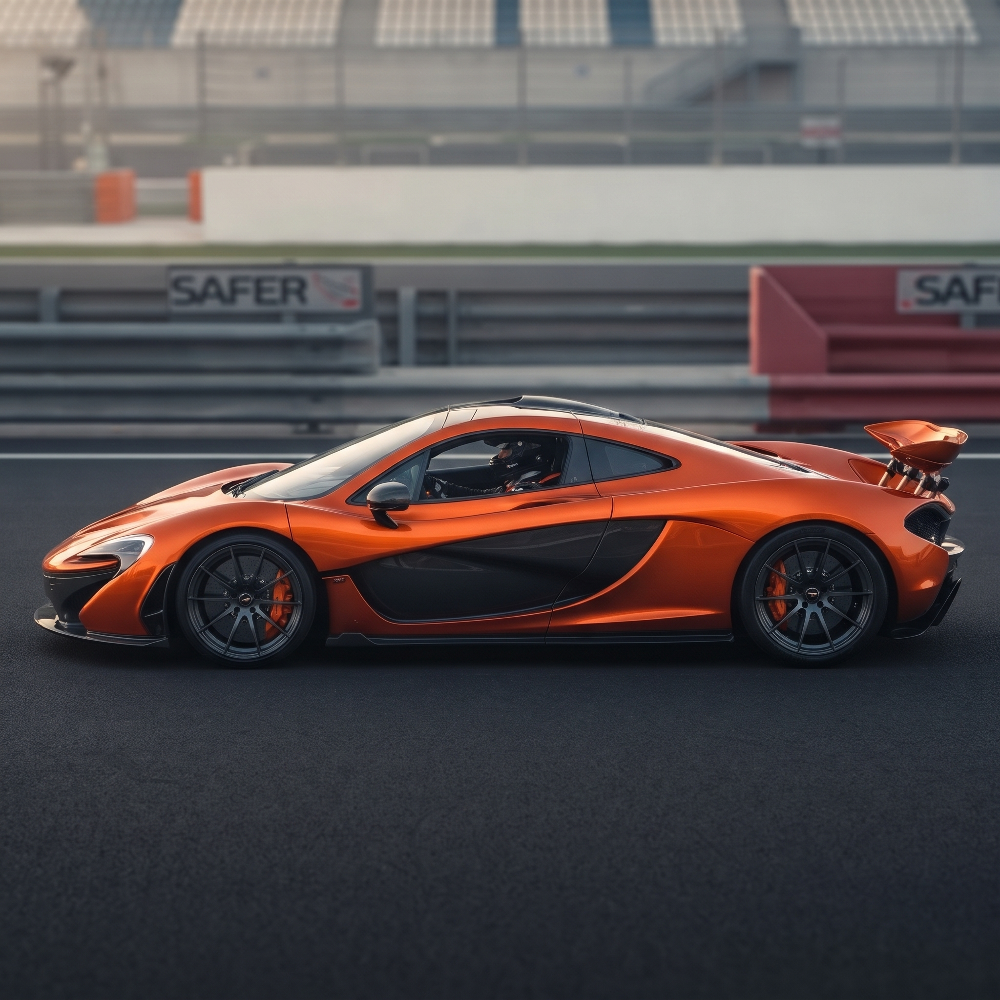
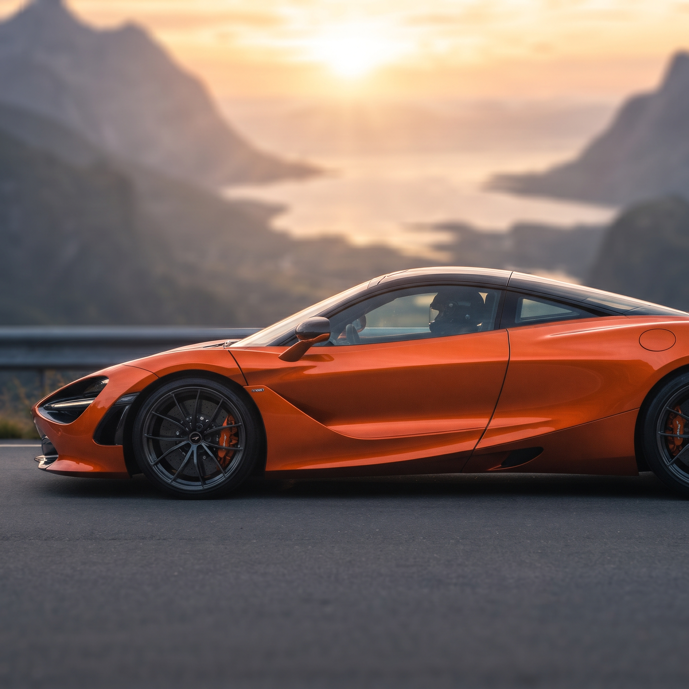
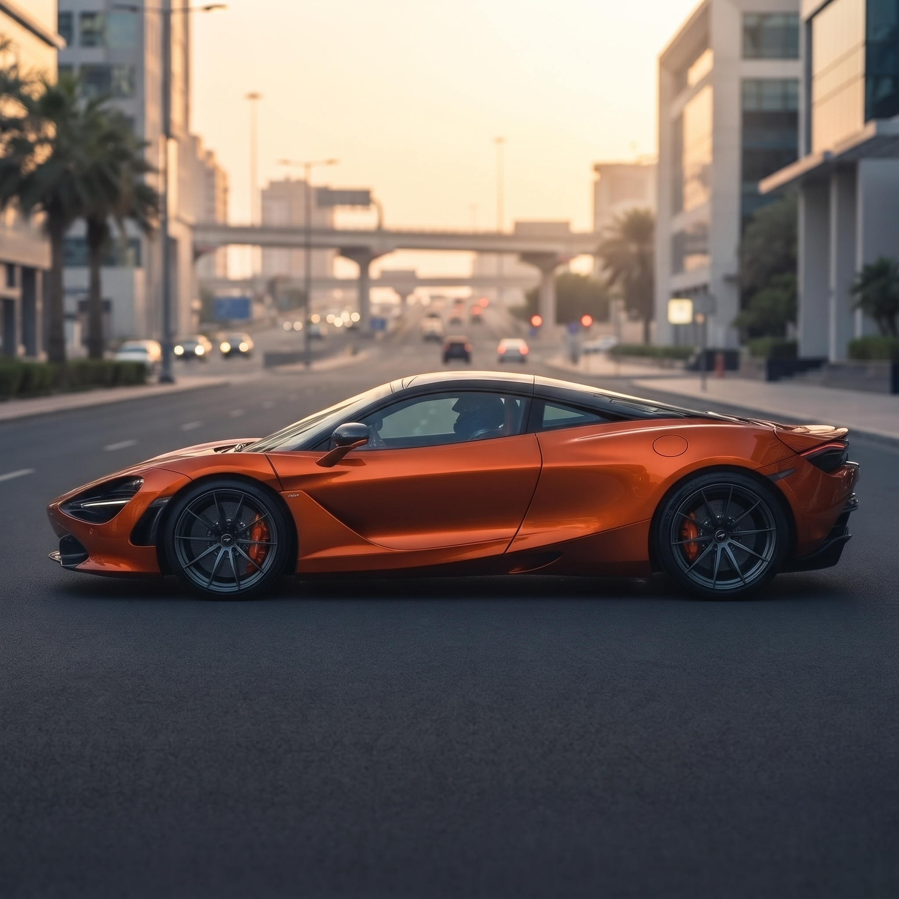

麥拉倫創立於 1963 年，本身就是從一級方程式（F1）賽事起家。品牌將多年在賽道上累積的空氣力學、底盤調校與尖端造車技術，直接轉化並應用在市售的超級跑車上，使其每一款車型都擁有接近賽車等級的操控反饋與極致性能表現。
麥拉倫是超跑界中極度堅持且擅長運用碳纖維材質的先驅。早在 1980 年代他們便將碳纖維技術引入 F1 賽車，並在 1992 年推出全球首輛採用碳纖維車體的量產超跑（McLaren F1）。其標誌性的碳纖維單體車艙（如 Monocage 結構）不僅能確保極高的車身剛性與乘員安全，更能實現極致輕量化，是締造強悍加速與靈敏操控的關鍵。
麥拉倫車款的外觀線條幾乎都是為了追求極致的風阻與下壓力而生。除了常見的前後擾流與進氣口，其許多車型（如 P1）更配備了主動式空氣力學尾翼（可變換角度或充當空氣煞車），結合先進的電子懸吊與動態控制系統，能在高速過彎或急煞時自動調整車身平衡，提供人車合一的精準操控體驗。


